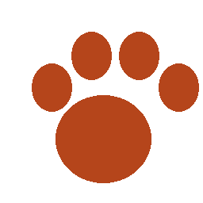

Componentes de feedback
Badges
- Vacinado
- Castrado
- Urgente
Alertas
Cadastro recebido com sucesso.
Revise os campos destacados.
O abrigo não atende aos domingos.
Toasts e modal

Cadastro recebido com sucesso.
Revise os campos destacados.
O abrigo não atende aos domingos.